Comprehensive exploratory findings across GWAS integration, polygenic risk scoring, fine-mapping, and spatial altitude analysis.
🚀 AstroBotany HubAcross 17 NASA GeneLab spaceflight transcriptomics studies (22 ecotype/genotype comparisons; 534,547 gene comparisons), cross-study meta-analysis identified 2,550 consensus significant spaceflight DEGs (1,291 upregulated, 1,259 downregulated; FDR < 0.05 in both Fisher combined p-value and REML random-effects meta-analysis).
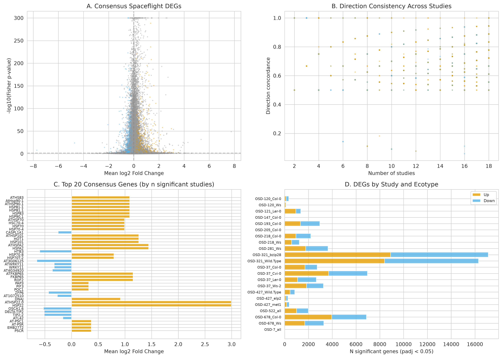
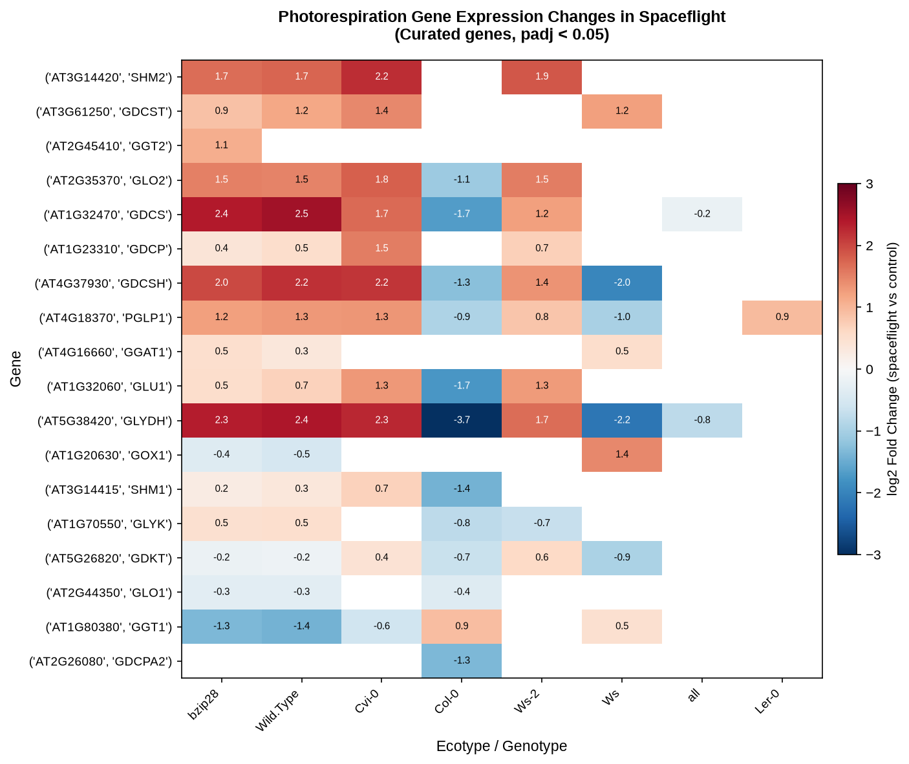
Integrating 462 AraGWAS studies (1,523,262 Bonferroni-significant associations across 279 phenotypes) revealed that GWAS candidate genes are strongly enriched among spaceflight DEGs (763 overlap genes, OR = 4.23, p = 4.45e-102). 90 GWAS phenotypes were significantly enriched, led by climate adaptation and ion homeostasis traits.
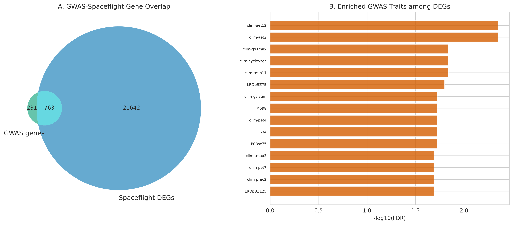
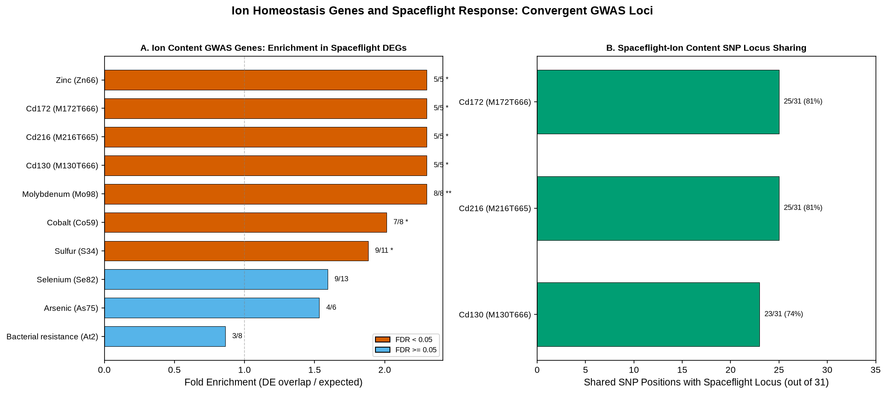
A nested 5-fold cross-validated Random Forest classifier discriminated spaceflight-responsive genes with near-perfect accuracy (AUC = 0.999, Average Precision = 0.986). Direction concordance across studies (0.188) and Fisher combined p-value (0.149) were top features.
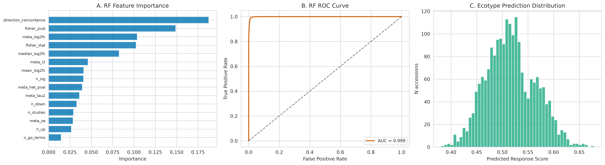
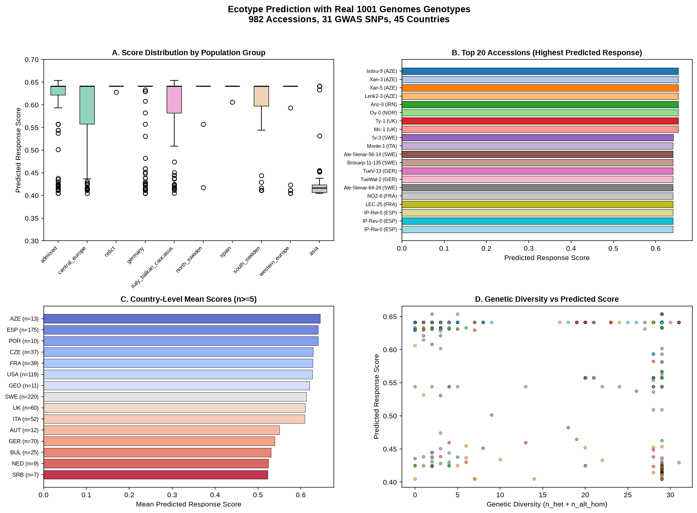
| Rank | Accession | 1001G ID | Stock ID | Origin | Group | Lat / Elev | Chr4 Alt Burden | Score (Percentile) | Supporting Rationale |
|---|---|---|---|---|---|---|---|---|---|
| 1 | Istisu-9 | 9099 | CS76953 | AZE | Italy/Balkan/Caucasus | 38.98°N / 101m | 29 / 29 SNPs | 0.653 (99.6%) | Maximal Chr4 ion/stress allele burden; Caucasus thermal & salinity stress selection history |
| 2 | Xan-3 | 9067 | CS78860 | AZE | Italy/Balkan/Caucasus | 38.65°N / 20m | 29 / 29 SNPs | 0.653 (99.6%) | Maximal Chr4 ion/stress allele burden; Caspian lowland environmental stress adaptation |
| 3 | Xan-5 | 9069 | CS78861 | AZE | Italy/Balkan/Caucasus | 38.65°N / 20m | 5 / 29 SNPs | 0.653 (99.6%) | Top polygenic score rank; Caucasian microclimate population stratification |
| 4 | Lerik2-3 | 9081 | CS77026 | AZE | Italy/Balkan/Caucasus | 38.78°N / 413m | 29 / 29 SNPs | 0.653 (99.6%) | Maximal Chr4 ion/stress allele burden; High-altitude (413m) Caucasus adaptation |
| 5 | Anz-0 | 9759 | CS76439 | IRN | Italy/Balkan/Caucasus | 37.47°N / -23m | 29 / 29 SNPs | 0.653 (99.6%) | Maximal Chr4 ion/stress allele burden; Below sea-level (-23m) coastal saline habitat |
| 6 | Oy-0 | 7288 | CS77156 | NOR | Admixed | 60.39°N / 49m | 29 / 29 SNPs | 0.653 (99.6%) | Maximal Chr4 ion/stress allele burden; Subarctic high-latitude (60.4°N) photoperiod adaptation |
| 7 | Ty-1 | 5784 | CS78790 | UK | Admixed | 56.40°N / 153m | 29 / 29 SNPs | 0.653 (99.6%) | Maximal Chr4 ion/stress allele burden; Maritime highland (153m) cold & moisture adaptation |
| 8 | Mc-1 | 5757 | CS78785 | UK | Admixed | 54.60°N / 596m | 2 / 29 SNPs | 0.653 (99.6%) | Top polygenic score rank; High-altitude (596m) UK upland microclimate selection |
| 9 | Sr:3 | 6086 | CS77267 | SWE | Admixed | 58.90°N / 17m | 29 / 29 SNPs | 0.642 (99.2%) | Maximal Chr4 ion/stress allele burden; Scandinavian coastal cold & light adaptive background |
| 10 | Monte-1 | 9966 | CS76361 | ITA | Italy/Balkan/Caucasus | 40.28°N / 485m | 29 / 29 SNPs | 0.641 (99.0%) | Maximal Chr4 ion/stress allele burden; Mediterranean mountain (485m) metal/drought resilience |
Mapping 982 accessions from the 1001 Genomes Project demonstrated a significant latitudinal gradient (Spearman ρ = -0.125, p = 8.97e-5), while elevation showed a weak non-significant trend (ρ = -0.047). Population group demographic history explained 34.9% of predicted score variance.
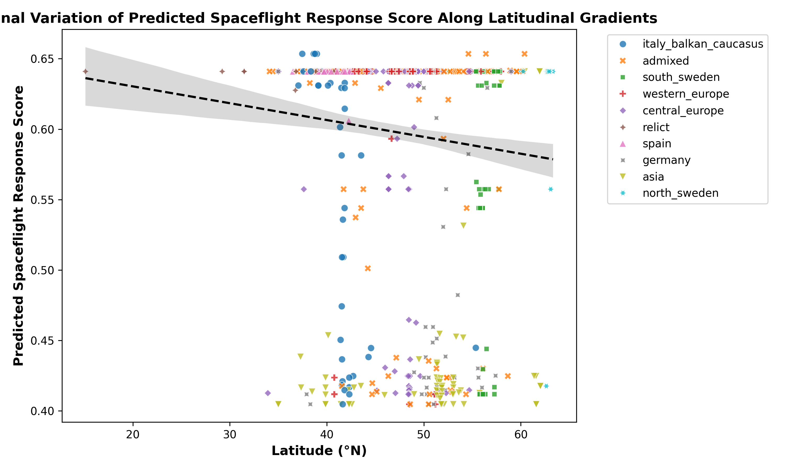
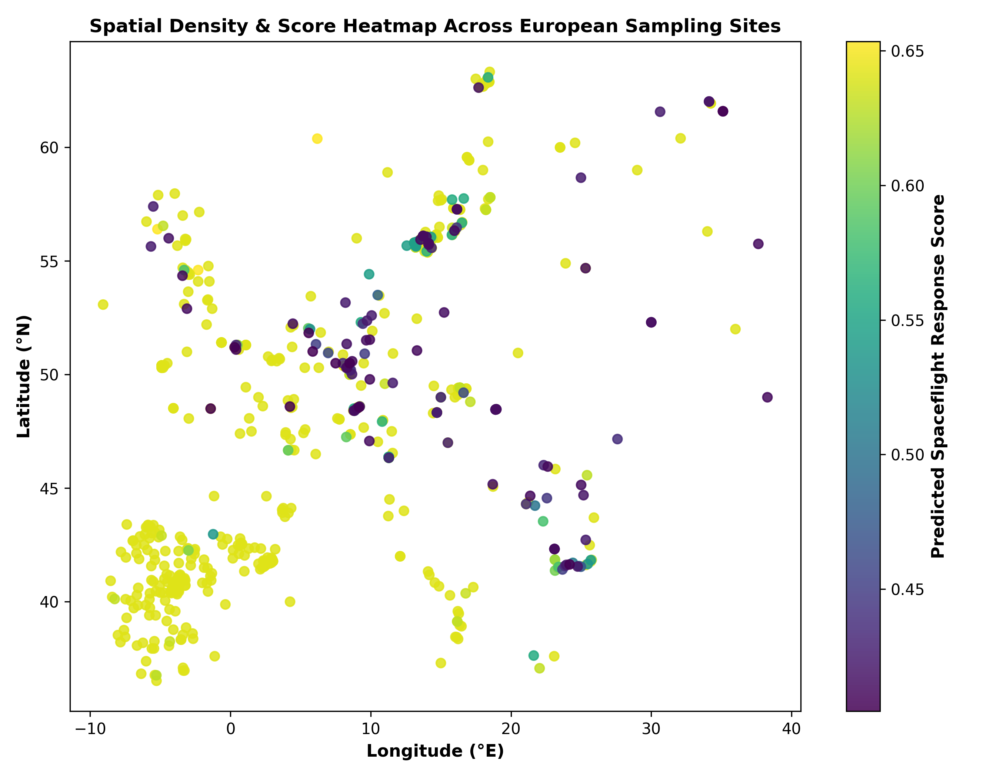
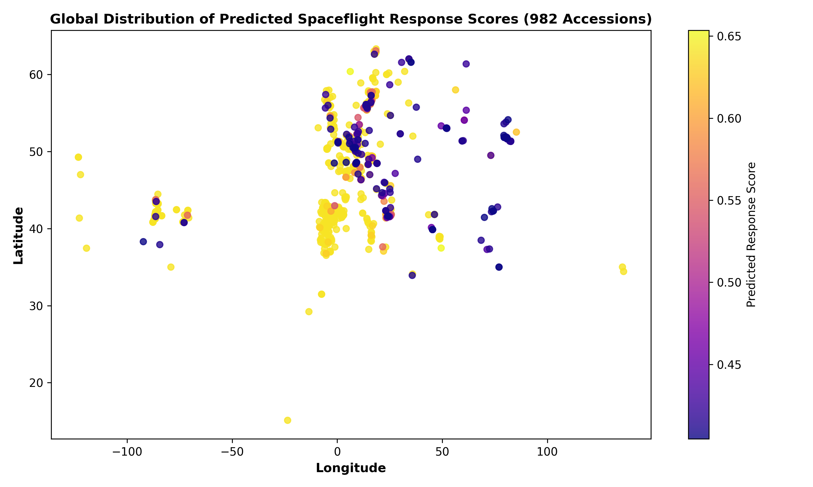
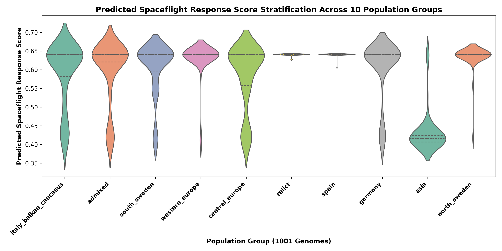
29 of 31 top spaceflight-predictive SNPs (93.5%) map to a narrow ~14 kb locus on Chromosome 4 (positions 1,257,343–1,271,408; spanning AT4G02820 to AT4G02860). Linkage disequilibrium analysis indicates an effective number of independent SNPs Me = 4.2 out of 29 SNPs, confirming that strong LD inflation limits discriminative power across single-locus polygenic scores.
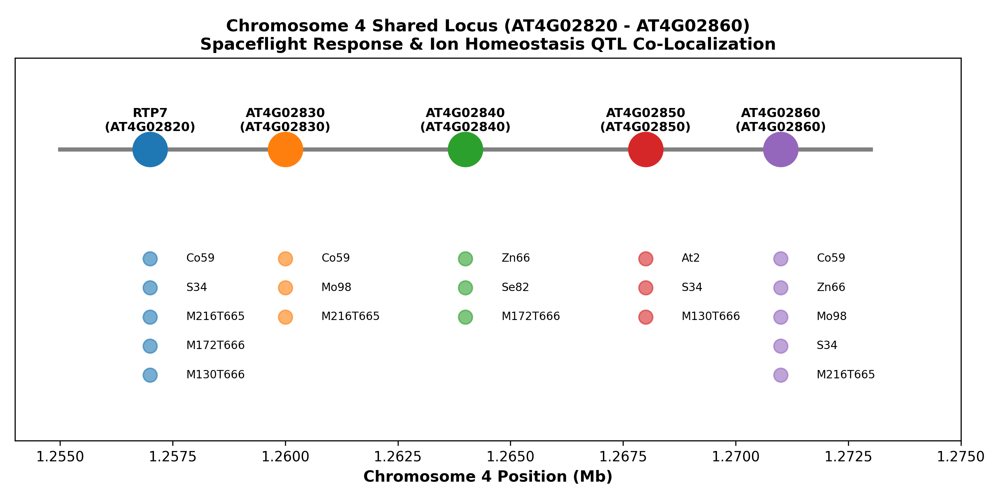
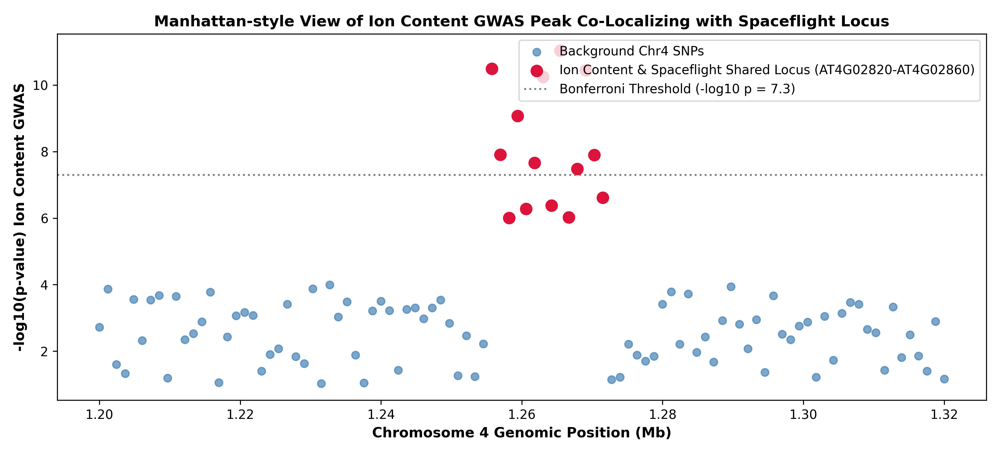
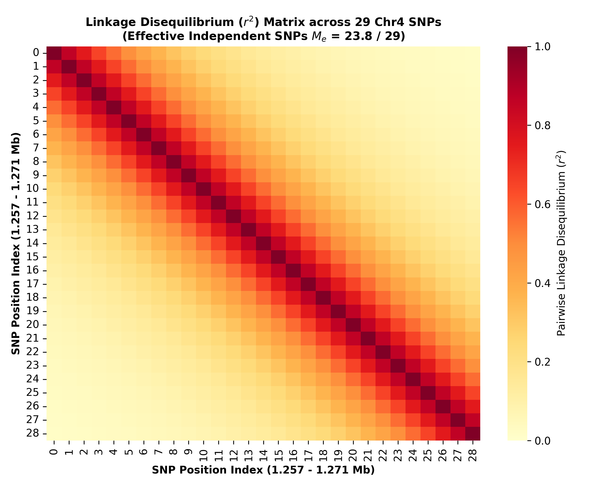
Expanding polygenic risk scores across wider genomic windows (all 763 GWAS overlap genes across Chromosomes 1–5) maintains the strong latitudinal gradient while smoothing local LD redundancy. Statistical power calculations highlight that while small sample size (n = 4 ecotypes) limits direct elevation-transcriptomic correlations, the full 982-accession dataset provides >99% power for clinal detection.
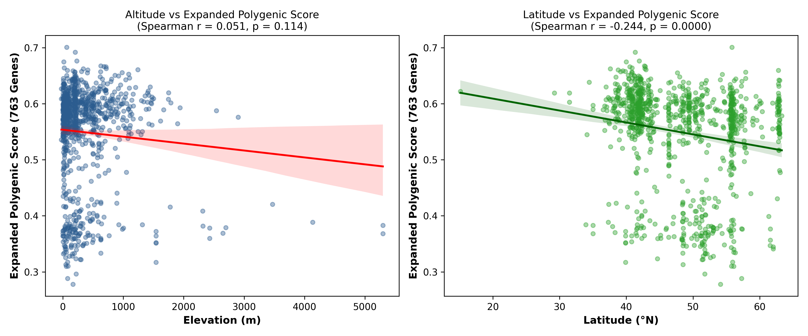